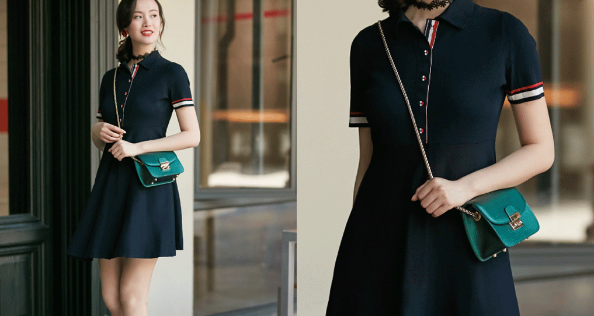
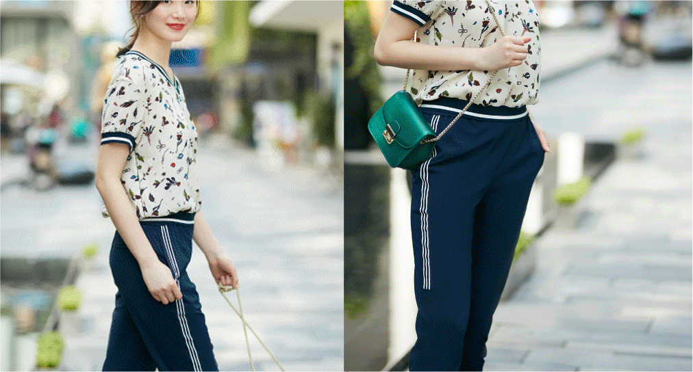

设计师们以旧翻新的能力好比一个粉刷匠，竟竞然能让曾经难以被朝流接受的POL衫也时髦起来，就连作为延伸品的POLO裙都实手可热了相比POLO衫，POLo裙的优点之一就是省去了搭配的烦恼，且收腰处理之后，更修饰身形，加入红白条纹，则弱化了年龄。

条纹亦是时髦运动风不可缺失的要素之一，尤其装饰于侧边之后，得到了大批时尚人士的宠爱，竖向延伸的条纹，更容易勾勒出优美曲线，裙边的开，随性而性为日常的休闲带去美好的心情。
裤装的运动感的确会比裙装来得直接，可相对的，穿出时感的度增加了，所以，成套穿看依旧是省力的好方法，相互吁应的条纹可以为整理造型加分，同时V领设计的海洋碎花上衣显瘦湾新，不正是这夏日运动风的极住表现嘛！
